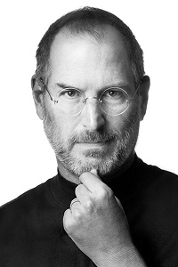

The Pursuit of Effortless Technology
Our Core Philosophy
Found in 1999 by Jacob Watkins and Ethan Watkins, the 2 brothers, we live by standards that you dont usually find in the FinTech world. We aren't money hungry monsters who'll suck your soul out for profits. Rather, we would only charge you money for products that actually improve your life. We dont sell anything useless here, we innovate for the greater good and sell it a reasonable price so its not something made by the rich and for the rich.
We treat this company as a passion and we treat our customers as a passionate audience. We love to hear your feedback, suggestions and complaints. We're eager for improvement and the best way to improve as a company is to meet the standards set by the users. And we work everyday to fulfill them and live upto them.
We dont settle for mediocrity and we're never satisfied with just doing our job and making a product, we make sure it's masterpiece of engineering. Our engineers and staff put all their love and soul into making our products. Just like blacksmiths back in the day used to work on their swords, so do our people, and we love them for it.
We founded the company because of a general dissatisfaction with the way technology was heading. It was more and more in our face with less and less to offer. Almost like we're being forced to be put in a cage that we didn't consent to be put in but have to walk in if we want to fit into society and work as a normal human. Tech was starting to become much more of a business rather than a field for human curiosity, marvels of intelligence, creativity and innovation. And we hated that. So we decided that instead of waste time and wait for a miracle, we'll be the ones to force the industry to change and adapt to our values. And over the years we had alot of ups and downs but now we can say that we're confidently at a spot where other brands look upto us.
Here's some people we take inspiration from:
The people we hire and work with are just as passionate as we are, each fueled by their own desire for re-shaping the industry so it's much more loved by everyone rather than becoming a pain and a necessity to survive. The environment is filled with visionaries and doers, rather than dreamers. We put work over everything. If that sounds like you, how about you join us and help us in the mission ;)
We love to find more and more people who share the same vision and want to work for it. If you want to join us and help us in our mission, visit Careers.